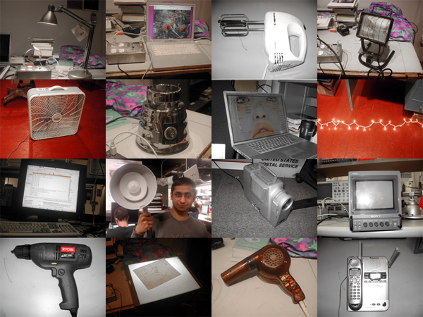
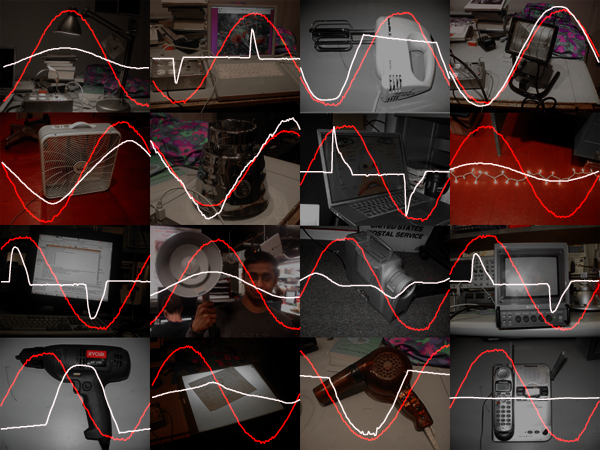
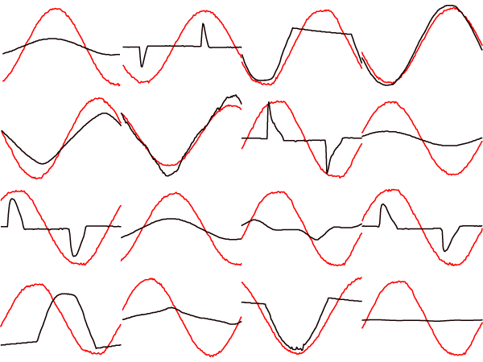

Data Set and Devices
A fundamental step in the design cycle of a Pattern Recognition system is data collection and labeling. As Duda, Hart, and Stork pointed out in their Pattern Classification Book, "data collection can account for surprisingly large part of the cost of developing a pattern recognition system". We were given a collection of 30 labeled data points that were reduced to 21 once we took a first look at the data an discarded the bad samples. A good data set for training and testing a Pattern Recognition system has to be both sufficiently large and representative of the different classes in consideration, and our data set was neither large or representative. The data was initially collected inside the Media Laboratory, thus constraining the variety of devices to those found in the Lab. Most of the common home appliances were not well represented. The initial data set helped us understand the nature of the problem, and gave us hints about new possible categories to relabel the data. With a laptop and a Plug, we devised a portable Plug system, and measured another 65 devices from different locations. The resulting data set, after discarding the bad data consisted of 74 data points.
The measured devices include: christmas lights, lightboxes, fans, hairdryers, powerdrills, blenders, lamps, monitors, and computers. Just by looking at them, it can make sense to distinguish them as: things that produce motion, things that produce light, electronics, or combinations of those three. This simple common sense observation turned out to be a very useful point of reference to start making sense out of the tangle of waves that was the raw data.
The following images represent a subset of 16 devices and their corresponding voltage-current waveforms. A careful look at them suggests the possibility to find correlations between the common sense function, the internal structure in terms of electrical engineering (inductive, resistive, switch mode power supply), and the shape characteristic of the voltage-current waveforms of a device.


